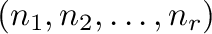
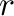
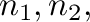
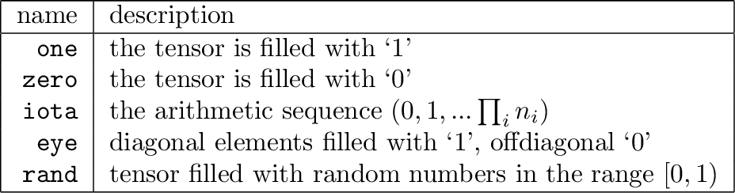

Ravel provides a simple functional language which allows for the generation of tensor-valued operations. This enables Ravel to work with hypothetical as well as actual data—for example, hypothetical sales volumes for a new product from zero to 500,000 sales per year can be generated using the iota formula by putting the expression ``iota(500001)'' in the initial value field for the variable Sales. This generates an axis/dimension named 0 with values from 0 to 500,000.
These functions take the form func

where
is the desired rank, and
etc are the dimensions of the tensor. Available functions include:

eye is equivalent to one for vectors.
rand generates different random numbers each time the simulation
is reset, and uses the clib rand() function.